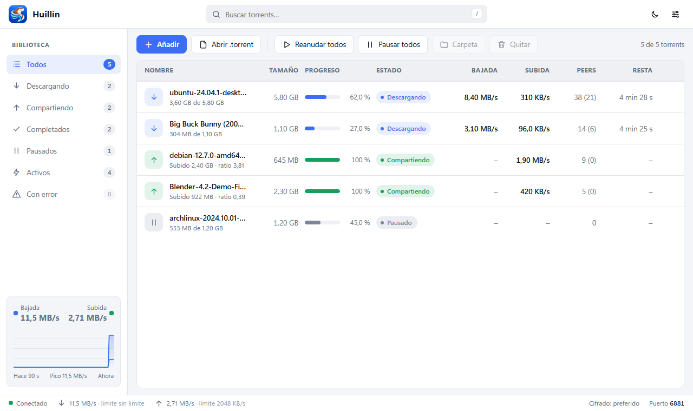

Un solo ejecutable, una interfaz limpia y cero publicidad. Para Windows, macOS y Linux.

Huillín hace lo que esperas de un cliente BitTorrent, de forma rápida y sin distracciones.
Añade archivos .torrent o enlaces magnet con un clic o arrastrándolos.
DHT y trackers para encontrar peers incluso sin tracker.
MSE configurable desde los ajustes: preferido, obligatorio o desactivado.
Controla la subida y la bajada para que tu conexión siga siendo tuya.
Copia un magnet y Huillín lo añade solo. Desactivable en Ajustes.
Cierra la ventana y las descargas siguen. Vuelve con un clic en el icono.
Abrir un .torrent con Huillín ya abierto lo suma a la misma ventana.
Un binario en Rust, sin servicios ni dependencias extra.
Gratis, sin registro y sin letra chica.
SHA256SUMS.txt de cada versión.Huillín es un proyecto abierto y en crecimiento. Tu feedback lo mejora.
Ir a la comunidad